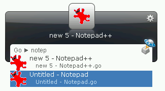

PyGo-Y is a Launchy python plugin that activates open windows from Launchy. It’s a python remake of an old Launchy plugin called Go-Y.
A typical usage might look like this:

For more history, read: http://sourceforge.net/forum/forum.php?thread_id=1702810&forum_id=677087
- Install pygo-y
- Restart Launchy
- Rebuild the catalog
- Bring up Launchy (Alt+Space)
- Type “Go” or “Focus” and press <TAB>, then the window name you want to focus on
- No switching to systray applications.